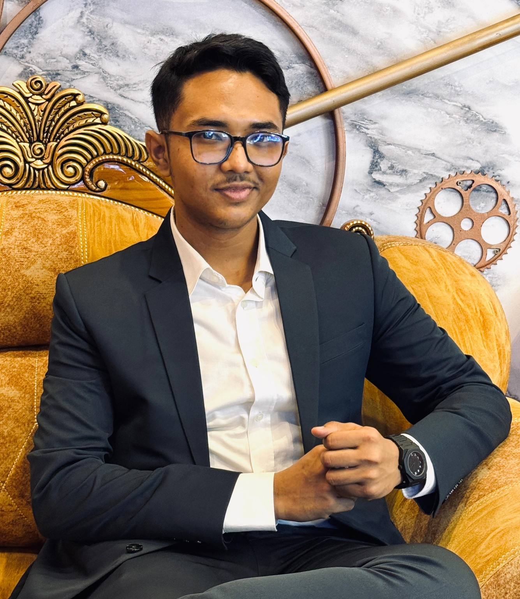

JUN 2026 — PRESENT
UI/UX AI Intern
FlyRank AI
Exploring UI/UX workflows and AI-assisted creative problem solving.INFORMATION & COMMUNICATION ENGINEERING
I'm Didar Ibn Firoz — a student, UI/UX enthusiast and creative technologist who enjoys turning technology, design and media into useful experiences.

Hello, I'm Didar Ibn Firoz, an Information & Communication Engineering student at Bangladesh University of Professionals with interests in UI/UX, graphic design, photography/videography and digital content creation.
I like learning quickly, collaborating with people and building things that sit at the intersection of technology and visual communication.
Information & Communication Engineering
Bangladesh University of ProfessionalsGPA 5.00
Mirpur Cantonment Public School & CollegeGPA 5.00
Monipur High School & College (Branch-2)FlyRank AI
Exploring UI/UX workflows and AI-assisted creative problem solving.BUP Robotics Club
Managing internal operations, coordinating logistics and overseeing daily functions.BUP Infotech Club
Managing administrative tasks, communication and Executive Board support.MCPSC Drum Club
Provided guidance and mentorship to club members.Prohora · InFlow · Bangladesh Youth Enthusiast
Represented organizations, promoted programs and driving student engagement.A web-based Disaster Recovery and Crisis Management System designed to organize emergency information and support crisis response.
VIEW REPOSITORY ↗Audio noise reduction project using a 6th-order IIR Butterworth low-pass filter.
VIEW REPOSITORY ↗A modern responsive tool for visualizing and comparing CPU scheduling algorithms.
VIEW REPOSITORY ↗Figma · Canva · Adobe Photoshop · Adobe Illustrator
Microsoft Word · Excel · PowerPoint · Google Workspace
Photography · Videography · CapCut · InShot
Team Leadership · Public Speaking · Communication
Basic Programming · HTML · CSS · JavaScript · Flask
Bangla — Native · English — Fluent · Hindi — Fluent · Japanese — Basic · German — Basic
LET'S CONNECT
Open to conversations around UI/UX, creative technology, student projects and collaboration.
didarabid@gmail.com ↗